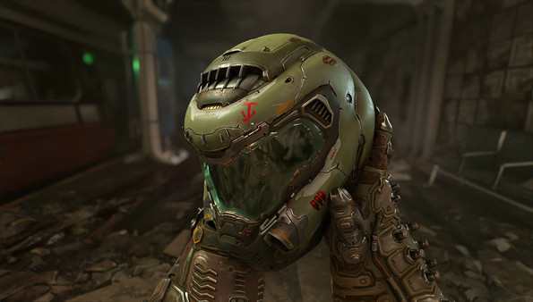
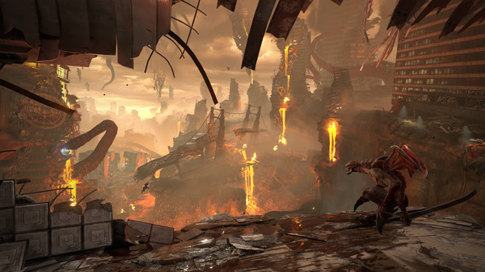
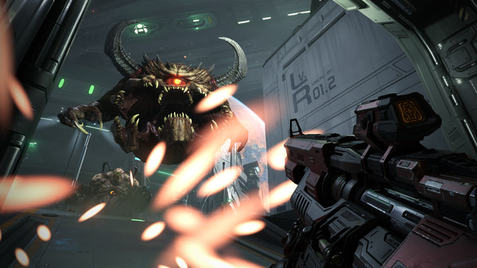
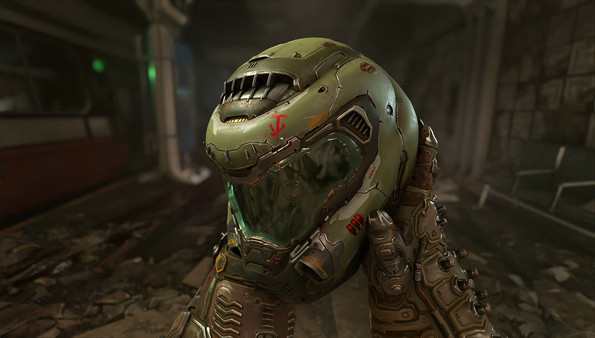
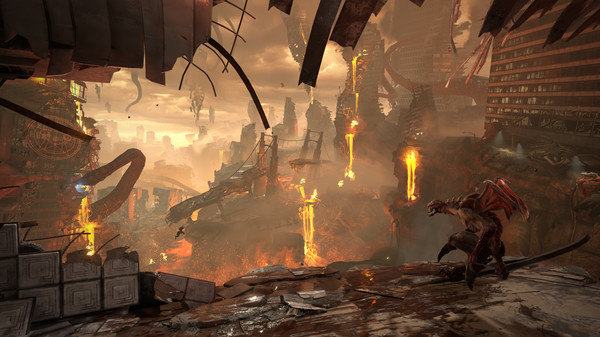
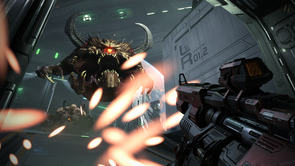

DOOM Eternal
DOOM Eternal is het directe vervolg op het bekroonde en bestverkopende DOOM (2016). Ervaar de ultieme combinatie van snelheid en kracht terwijl je je een weg baant door dimensies met het volgende sprong voorwaarts in push-forward first-person combat. Aangedreven door idTech 7 en aangedreven door gloednieuwe muziek van Mick Gordon, DOOM Eternal brengt je dichter bij de demonen dan ooit tevoren.
Action
First-person shooter
Gore
Violent
Rating: *****
Single player
Online PvP
Genre: First-person shooter
Ontwikkelaar: Bethesda Softworks
Uitgavedatum: 20 maart 2020
Afbeelding(en)
 





Systeemeisen
- Besturingssysteem: Windows 10 (64-bit)
- Processor: Intel Core i5-4593 or AMD FX-8350
- Geheugen: 8 GB RAM
- Grafische kaart: NVIDIA GTX 970 or AMD Radeon R9 290
- Opslagruimte: 50 GB
Recencies
"DOOM Eternal is een bloedstollende shooter die je urenlang zal vermaken." - IGN
"Een must-play voor fans van de klassieke DOOM games." - Gamespot
"DOOM Eternal is een waanzinnige en meedogenloze ervaring." - Destructoid